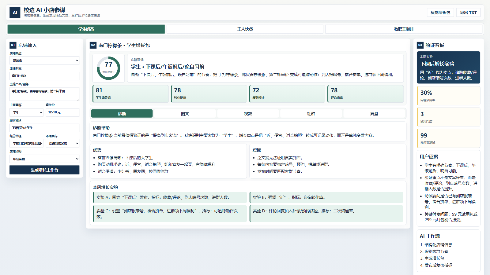

校边 AI 小店参谋
给校门口奶茶、快餐、咖啡小店用：店主填店铺和顾客情况，AI 直接告诉他本周该拉哪类客、发什么活动、用什么朋友圈/小红书/社群话术，并记录有没有带来进店。
3试用门店
30%内容采用率
1+付费意愿
1. 机会判断
目标用户：学校 500 米内 1-5 人小店，老板兼收银/出品/运营，没有专门新媒体同学。
真痛点：不是“缺一篇文案”，而是不知道今天该拉谁、发什么活动、发完看什么数据。
为什么现在：AI 能把菜单、客群、评论转成可执行动作；校园客群节奏固定，适合快速模板化验证。
2. 用户证据
小店愿意要结果北大小微调查显示需求不足、利润承压。推论：老板不会为“漂亮文案”付费，会为能带到店/进群的动作付费。
AI 已开始进小店美团商家 AI 设计/接待工具已有规模使用。推论：机会不在“教育老板用 AI”，而在把 AI 结果做得更本地、更可执行。
校园场景可标准化下课、午休、晚自习前、宿舍拼单是稳定时段。推论：先做奶茶/快餐/咖啡 3 类高频店，比泛化全行业更容易验证。
验证假设
- 老板能在 3 分钟理解原型。
- 至少 30% 内容被实际采用。
- 至少 1 家愿意付 99/299 元继续用。
3. MVP 样例：真实 Demo 页面原型图

MVP 不是完整 SaaS，而是一个能当场演示的页面：验证老板是否能在 3 分钟看懂，并愿意把 AI 生成的“本周拉客动作”真实发布。
输入什么
店铺类型、主推产品、客单价、目标顾客、本周目标、经营半径；尽量用老板听得懂的字段，不让他填复杂运营表。
AI 怎么想
先判断客群节奏，再匹配购买动机，最后生成“到店暗号、拼单、预订、进群、评论回复”等可追踪动作。
交付什么
1 个本周活动、3 条图文/朋友圈文案、2 条短视频脚本、5 条评论回复、1 张复盘表；支持复制/导出。
怎么证明有用
不看点赞，优先看收藏/评论、到店报暗号、进群人数、拼单/预订次数；这些才和老板收入更近。
4. 商业判断
谁付费：店主、店长或负责线上运营的兼职同学。
为什么：省时间、补运营能力、降低请代运营成本，并把平台浏览沉淀成微信群/老客复购。
免费1 次体检 + 3 条内容
99/周1 周增长包 + 复盘表
299/月每周内容包 + 活动建议
699/月评论/社群/复盘轻托管
5. 2 周验证计划
D1-D2访谈 8-10 家店，记录现状和预算。
D3-D4筛 3 家试用店，采集门头/菜单/评论。
D5-D6生成增长包和店铺体检分。
D7-D9协助发布小红书、朋友圈、微信群。
D10-D11记录浏览、咨询、进群、到店。
D12-D13优化 Prompt、定价和交付格式。
D14测试 99/299 元付费意愿。